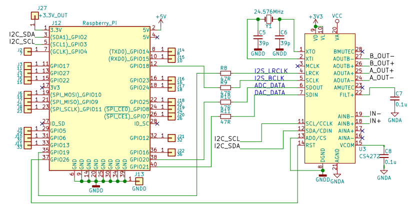

Raspberry Pi でのCS4272使用方法
2018年03月26日 カテゴリー：メモ・雑記
Raspberry Pi（RPi）で音声信号向けのADCとDACを使う場合、最も手軽に使用できるICはWM8731だと思います。今回はさらなるノイズ低減を期待して、CS4272というICを試しました。
CS4272を使ったオーディオカードにTeensy Super Audio Board（SAB）というものがあり、KiCAD files and some test codeから回路図や使用ガイド等がダウンロードできます。このSABのデバイスドライバを利用するわけですが、
RPi公式サイト記事Kernel buildingのLocal buildingの通りに操作を行っていきます。
[1]
$ sudo apt-get install git bc
↓SAB用のカーネルソースをコピー
$ git clone --depth=1 https://github.com/whollender/linux
[2a] RPi 1, 0 の場合
$ cd linux
$ KERNEL=kernel
$ make bcmrpi_defconfig
↓ビルド開始、RPi0で14時間程度かかる
$ make zImage modules dtbs
[2b] RPi 2, 3 の場合
$ cd linux
$ KERNEL=kernel7
$ make bcm2709_defconfig
↓ビルド開始、RPi3で3時間程度かかる
$ make -j4 zImage modules dtbs
[3]
$ sudo make modules_install
$ sudo cp arch/arm/boot/dts/*.dtb /boot/
$ sudo cp arch/arm/boot/dts/overlays/*.dtb* /boot/overlays/
$ sudo cp arch/arm/boot/dts/overlays/README /boot/overlays/
$ sudo cp arch/arm/boot/zImage /boot/$KERNEL.img
そして再起動すると/boot/overlaysディレクトリにsuperaudioboard.dtboというファイルができています。続いて/boot/config.txtを編集します。
$ sudo nano /boot/config.txt
以下の2行の#を外す
#dtparam=i2c_arm=on
#dtparam=i2s=on
最後に以下の1行を追加
dtoverlay=superaudioboard
再起動後、lsmodコマンドでSABドライバのモジュールが確認できる…はずですが、読み込まれていないことがわかります。モジュール情報をmodinfoコマンドで確認するとvermagic：4.9.59+という記載が出てきますが、ビルドしたカーネルのバージョン（リリース番号）をuname -r コマンドで確認すると4.9.80+となっています。強制的にモジュールを読み込ませようとしてみます。
$ sudo modprobe -f snd-soc-superaudioboard
Exec format errorというのが出てきてダメでした。
バージョン情報を編集して再ビルドするという方法を行います。参考ページ→Linux 4 Tegraにv4l2loopbackモジュールを入れる時の注意点
$ sudo nano linux/include/generated/utsrelease.h
#define UTS_RELEASE "4.9.80+"という記載があるので、4.9.80+を4.9.59+（RPi 2, 3の場合は4.9.80-v7+→4.9.59-v7+）へ変更した後、もう一度[2a]（または[2b]）と[3]をやり直し再起動します。一度ビルドしているので早く終わります（未確認ですが、RPi3で1時間未満）。
※後から確認すると、再ビルド後のバージョンは4.9.80+でした。どこか記憶違いをしている部分があるかもしれません。
RPiとCS4272との接続は下図です。SABと同じように24.576MHzの水晶発振子と39pFのコンデンサを使います。

aplay -l コマンドでサウンドカードの確認ができます。接続が正しければ、CS4272がSABとして認識されているはずです。音量等の調節はalsamixerコマンドでできます（hキーでヘルプ表示）。